从输入URL到整个页面加载展示到用户面前网络请求和页面渲染两个步骤的过程。
浏览器内核（渲染进程）
- 浏览器内核分为两个部分：渲染引擎，JS引擎。
- 由于JS引擎越来越独立，浏览器内核就倾向于单指渲染引擎。
常见引擎
- 渲染引擎
- firefox使用gecko引擎
- IE使用Trident引擎
- 2015年微软推出自己新的浏览器，原名叫斯巴达，后改名edge,使用edge引擎
- chrome\safari\opera使用webkit引擎
- 3年chrome和opera开始使用Blink引擎
- JS引擎
- 老版本IE使用Jscript引擎
- IE9之后使用Chakra引擎
- edge浏览器仍然使用Chakra引擎
- firefox使用monkey系列引擎
- safari使用的SquirrelFish系列引擎
- Opera使用Carakan引擎
- chrome使用V8引擎。nodeJs其实就是封装了V8引擎
对于前端来说，页面的渲染、JS的执行、事件的循环都在这个进程中进行。 浏览器的渲染进程是多线程的。 浏览器的渲染进程包括哪些线程：
1.GUI渲染线程
- 负责渲染浏览器界面，解析HTML、CSS，构建DOM Tree，css Tree和RenderObject树，布局和绘制
- 当界面需要重绘（Repaint)或由于某种操作引发回流（reflow)时，该线程就会执行
- GUI渲染线程与JS引擎线程是互斥的，当JS引擎执行时GUI线程会被挂起（相当于被冻结了），GUI更新会被保存在一个队列中，等到JS引擎空闲时立即被执行。
2.JS引擎线程(主线程、单线程)
- 也称JS内核，负责处理JS脚本程序。例如V8引擎
- JS引擎一直等待着任务队列中任务的到来，然后加以处理，一个Tab页（Renderer进程）中无论什么时候都只有一个JS引擎线程在运行JS程序
- GUI渲染线程与JS引擎线程是互斥的，所以如果JS执行的时间过长，页面渲染就不连贯。
3.事件触发线程
- 归属于浏览器而不是JS引擎，用来控制事件循环（可以理解为：JS引擎自己都忙不过来，需要浏览器另开线程协助）
- 当JS引擎执行代码块和setTimeout时（也可来自浏览器内核的其他线程，如鼠标点击），会将对应事件任务添加到事件线程(事件队列)中
- 当对应的事件符合触发条件被触发时，该线程会把事件添加到待处理队列的尾部，等待JS引擎的处理
- 由于JS是单线程关系，所以这些待处理队列中的事件都得排队等待JS引擎处理（当JS引擎空闲时才会去执行）
4.定时触发器线程
- setInterval和setTimeout所在的线程
- 浏览器定时计数器并不是由JS引擎计数的，因为JS引擎是单线程的，如果处于阻塞线程状态就会影响计时的准确性
- 因此通过定时触发器线程来计时并触发定时，计时完毕后，添加到事件队列中，等待JS引擎空闲后执行
- W3C在HTML标准中规定，要求setTimeout中低于4ms的时间间隔算4ms
5.异步http请求线程
- XMLHttpRequest在连接后是通过浏览器新开一个线程请求
- 在检测到状态变更时，如果设置有回调函数，异步线程就产生状态变更事件，将这个回调再放入事件队列中，再由JS引擎执行
6.EventLoop轮询处理线程
上面我们已经知道了，有3个东西：
- 主线程，处理同步代码；
- 异步线程，处理异步代码；
- 消息队列，存储着异步成功后的回调函数，一个静态存储结构。
但是，它们3个互相怎么交流的？这需要一个中介去专门去沟通它们3个，而这个中介，就是EventLoop轮询处理线程
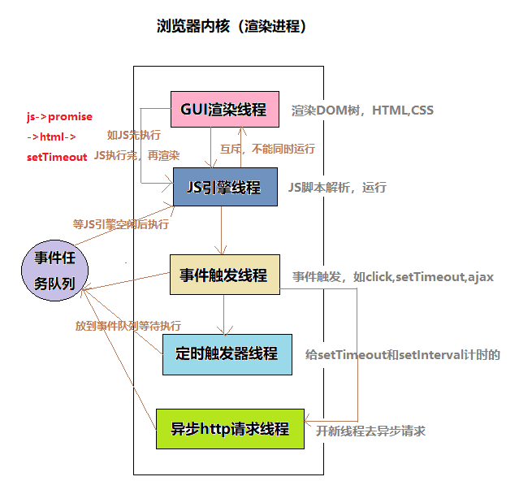
为什么JavaScript是单线程？- JavaScript的单线程，与它的用途有关。JavaScript的主要用途是与用户互动，以及操作DOM。这决定了它只能是单线程，否则会带来很复杂的同步问题。
- 为了利用多核CPU的计算能力，HTML5提出Web Worker标准，允许JavaScript脚本创建多个线程，但是子线程完全受主线程控制，且不得操作DOM。
同步和异步
- 同步在发出调用后，没有结果前是不返回的，一旦调用返回，就得到返回值。调用者会主动等待这个调用结果。
- 异步是发出调用后，调用者不会立刻得到结果，而是被调用者通过状态或回调函数来处理这个调用。
任务队列： 因为JavaScript是单线程的。就意味着所有任务都需要排队，前一个任务结束，后一个任务才能执行。 主线程挂起处于等待中的任务，先运行排在后面的任务。等到IO设备返回了结果，再把挂起的任务继续执行下去。于是有了同步任务和异步任务。
- 同步任务 是指在主线程上执行的任务，只有前一个任务执行完毕，下一个任务才能执行。
- 异步任务 是指不进入主线程，而是进入任务队列（task queue）的任务，只有主线程任务执行完毕，任务队列的任务才会进入主线程执行。
宏任务和微任务（异步任务的两种）
macro-task(宏任务，优先级低，先定义的先执行): script （主代码块）、ajax，setTimeout，setInterval，setImmediate，I/O，事件，postMessage，MessageChannel（用于消息通讯）
micro-task(微任务，优先级高，并且可以插队，不是先定义先执行): process.nextTick(Node.js 环境)，Object.observe(已废弃), MutationObserver（Promise本身是同步的，Promise.then是异步的微任务）
宏任务和微任务的区别：微任务是会被加入本轮循环的，而宏任务都是在次轮循环中被执行。简单就是说，微任务会比宏任务提前执行
浏览器的事件环(Event Loop)
JavaScript是一个单进程的语言，同一时间不能处理多个任务，所以何时执行宏任务，何时执行微任务？我们需要有这样的一个判断逻辑存在。
简单概括为：执行同步代码 ==> 检查微任务并执行 ==> 执行宏任务1 ==> 检查微任务并执行 ==> 执行宏任务2 ==> 检查微任务并执行 ==> 执行宏任务3 ……
一次 Eventloop 循环会处理一个宏任务和所有这次循环中产生的微任务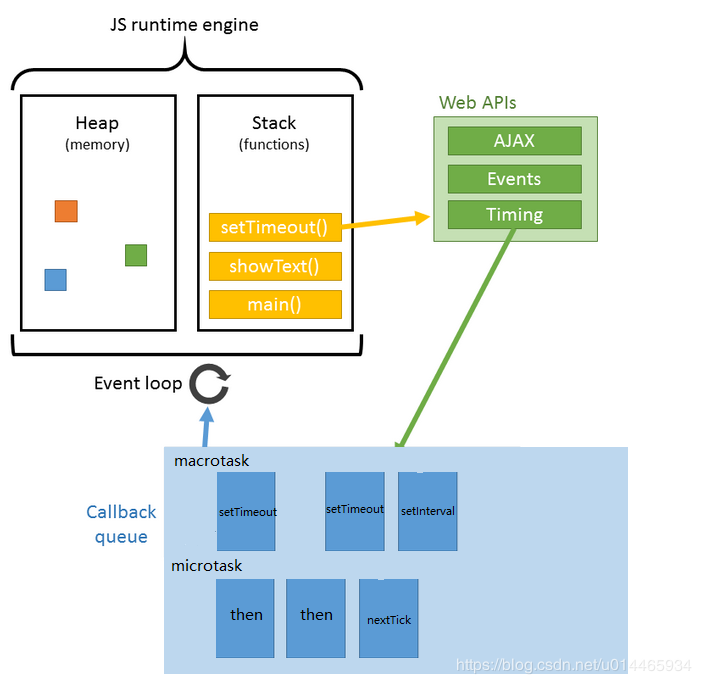
每次执行栈中的代码就是一个宏任务(task)，而消息队列中的任务会按顺序放到下一次的宏任务(task)中，每个宏任务(task)在执行时，V8 都会重新创建栈，然后随着宏任务(task)中函数调用，栈也随之变化，最终，当该宏任务(task)执行结束时，整个栈又会被清空，接着主线程继续执行下一个宏任务(task)。
而浏览器会在一个 宏任务(task) 执行结束后，在下一个 task 执行开始前，对页面进行重新渲染如图：
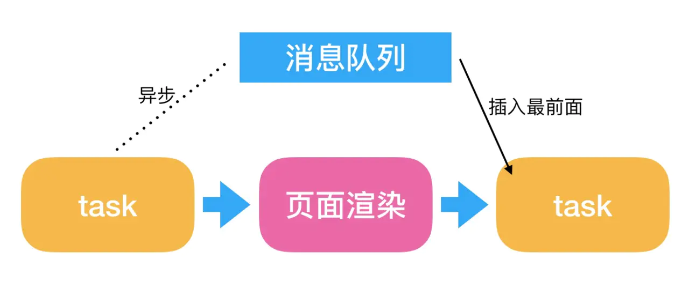
由于主线程执行消息队列中宏任务的时间颗粒度太粗了（主要中间有一次渲染过程），无法胜任一些对精度和实时性要求较高的场景，所以又引入了promise机制也就是微任务如图:
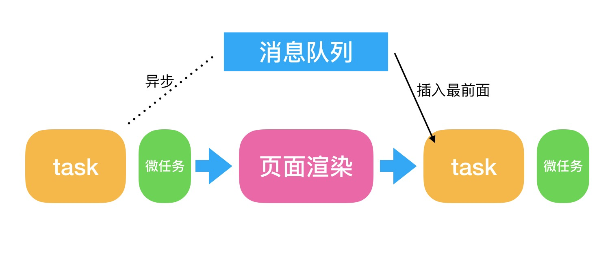
举例：
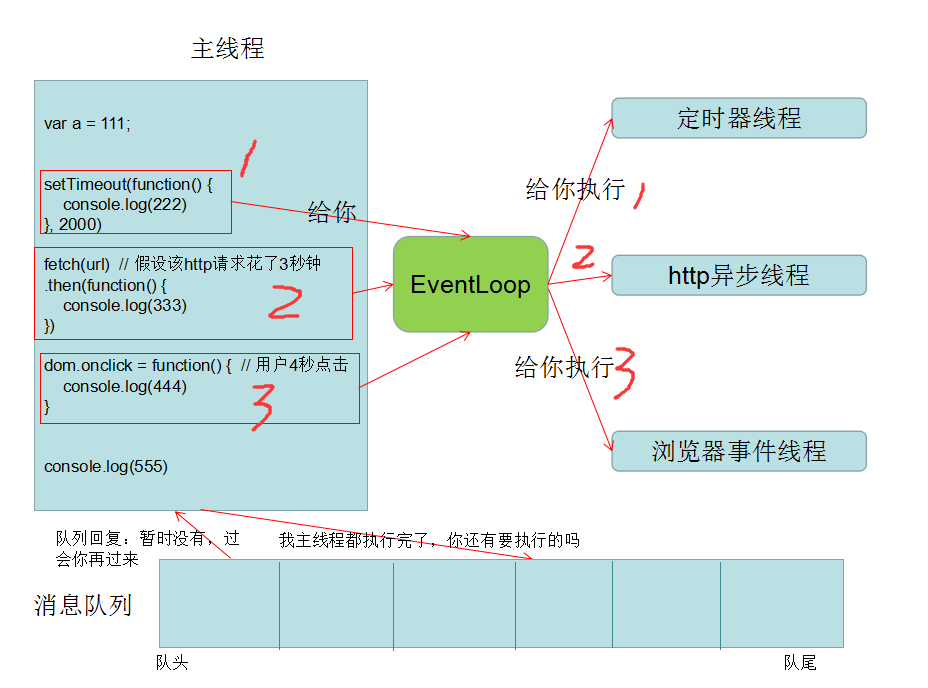
console.log('script start');
setTimeout(function() {
console.log('setTimeout1');
}, 10);
Promise.resolve().then(function() {
console.log('promise1');
}).then(function() {
console.log('promise2');
});
setTimeout(function() {
console.log('setTimeout2');
}, 0);
console.log('script end');
浏览器渲染流程
-
Browser主进程收到用户请求，首先需要获取页面内容（如通过网络下载资源），随后将该任务通过RendererHost接口传递给Render渲染进程 -
Render渲染进程的Renderer接口收到消息，简单解释后，交给渲染线程GUI，然后开始渲染 -
GUI渲染线程接收请求，加载网页并渲染网页，这其中可能需要Browser主进程获取资源和需要GPU进程来帮助渲染 - 当然可能会有
JS线程操作DOM（注意：这可能会造成回流并重绘） - 最后
Render渲染进程将结果传递给Browser主进程 -
Browser主进程接收到结果并将结果绘制出来
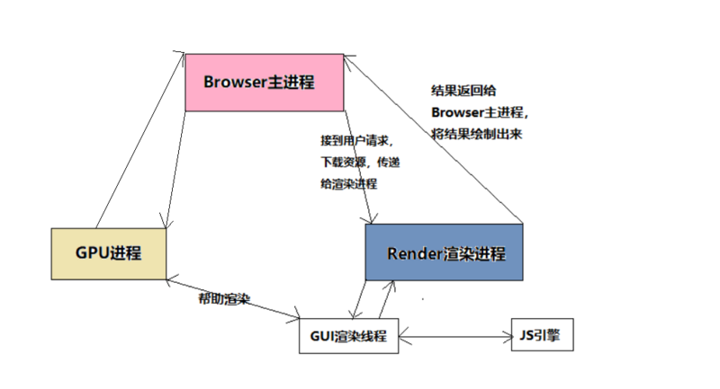
浏览器内核拿到内容后，渲染大概可以划分成以下几个步骤：
- 解析html创建dom树
- 解析css构建css树
- 运行JS脚本，等到JS文件下载完成后，通过DOM API 和CSS API 操作DOM Tree和CSS Rule Tree，然后结合Css 树和DOM合并成render树。
- 布局render树（layout/reflow），负责各元素尺寸、位置的计算
- 绘制render树（paint)，绘制页面像素信息
- 浏览器将各层的信息发送给GPU进程，GPU会将各层合成（composite）显示在页面上，渲染完毕后就是load事件了，之后就是自己的JS逻辑处理了
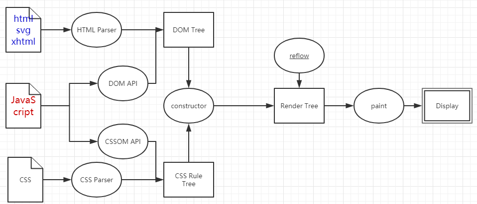
构建DOM树
什么是DOM树？
DOM模型：
HTML和XML文档的编程接口。它提供了对文档的结构化的表述，并定义了一种方式可以使从程序中对该结构进行访问，从而改变文档的结构，样式和内容。
DOM 将文档解析为一个由节点和对象（包含属性和方法的对象）组成的结构集合。简言之，它会将web页面和脚本或程序语言连接起来。
DOM的结构是由各种子节点组成的，那么以HTMLDocument为根节点，其余节点为子节点，那么组织成的树型数据结构的表示就是DOM树。
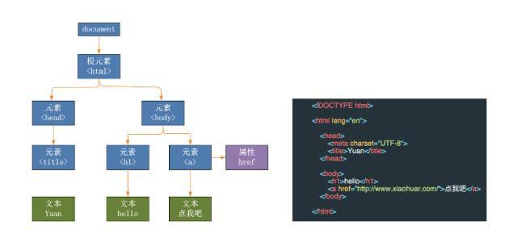
利用HTML解释器构建DOM树
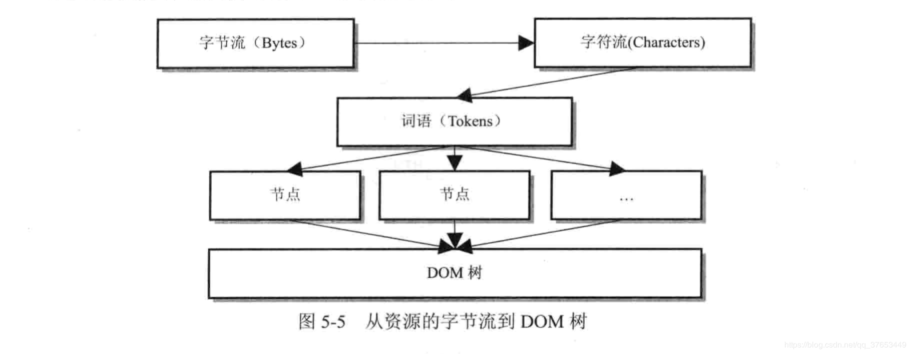
HTML解释器会将从网络或者本地获取的HTML文件解析成DOM树。需要经过以下几个步骤：
- 将字节流转换成字符流，根据不同的编码进行解码
- 通过词法分析将字符流解析为一个个词语（
Token）。这个过程会跳过空格与换行内容。词法分析由HTMLTokenizer完成。 - 使用
XSSAuditor来进行词语验证及过滤，主要是出于安全方面的考虑 - 在经过
XSSAuditor过滤之后，由解释器调用方法构建DOM节点 - 从上面的
DOM节点构建出来DOM树，包括创建元素节点的属性节点工作
构建CSSOM
什么是CSSOM？
CSSOM（CSS对象模型）定义了媒体查询、选择器以及CSS本身的一系列API（包括一般的解析和序列化规则）。它是对附在DOM结构树上的样式的表达，与DOM树的呈现方式相似，只是每个节点都会带上样式属性，包括明确定义和隐式继承的样式。
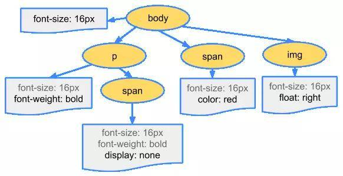
CSS是一种渲染阻塞资源(render blocking resource)，它需要完全被解析完毕之后才能进入生成渲染树的环节。
为什么建议将CSS引用及 <style> 标签放在 head 中？原因：CSS并不像HTML那样能执行部分并显示，因为CSS具有继承属性， 后面定义的样式会覆盖或者修改前面的样式。如果我们只使用样式表中部分解析好的样式，我们可能会得到错误的页面效果。所以，我们只能等待CSS完全解析之后，才能进入关键渲染路径的下一环节。
在CSSOM构建完毕之前，页面会一直处于白屏状态，放在head中，通过优先解析CSS，从而提高用户体验。
CSS解释器
与处理HTML的逻辑一样，CSS解释器做的工作也是将收到的CSS文件转换成浏览器能够理解处理的结构：
- 将字节流转换成字符流
- 接着将字符流转换成词语（Token）
- 将Token转换成相应的节点
- 最后组装成CSSOM树
CSS 的阻塞性
CSSOM树在构建过程中会阻塞页面的渲染，但是不会阻塞DOM的解析。
不阻塞 DOM 树的解析，但会阻塞 Style Rules 的解析，进而阻塞 Render Tree ，阻塞页面渲染阻塞在 CSS 之后的 JS 的解析执行（因为某些 JS API 如 getComputedStyle 需要最新的样式数据）因为渲染树需要等待
Style Rules，减少不必要的回流重绘
为何<script>与<link>同时在头部的话，<script>在上可能会更好？
浏览器也无法感知
JS内容到底是什么，为避免样式获取，因而只好等前面所有的样式下载完后，再执行JS。之所以是可能在上会更好，是因为如果<link>的内容下载更快的话，是没影响的，但反过来的话，JS就要等待了，然而这些等待的时间是完全不必要的。
JS 的阻塞性
JS，也就是<script>标签，阻塞DOM解析和渲染。
JS 阻塞 DOM 解析JS 会阻塞在其后的
DOM树的构建，进而影响Render Tree。（因为JS经常操作DOM API，为确保DOM一致性）
优化方法，两类：浏览器并不知道
JS的内容是什么，如果先行解析下面的DOM，万一JS删除了后面的DOM，浏览器就做了无用功，特别还存在document.write。所以，浏览器干脆等脚本执行完再干活。
-
JS文件体积太大，同时没必要阻塞DOM解析的话，可按需要加上defer或者async属性，此时脚本下载的过程中不会阻塞DOM解析 - 拆出不用立即执行的代码，可以使用：
setTimeout()。现代的浏览器也会“偷看”之后的DOM内容，碰到如<link>、<script>和<img>等标签时，它会先行下载。
每次碰到
<script>标签时，浏览器都会渲染一次页面。原因：浏览器不知道脚本的内容，因而碰到脚本时，只好先渲染页面，确保脚本能获取到最新的
DOM元素信息，尽管脚本可能不需要这些信息。
异步脚本的阻塞性
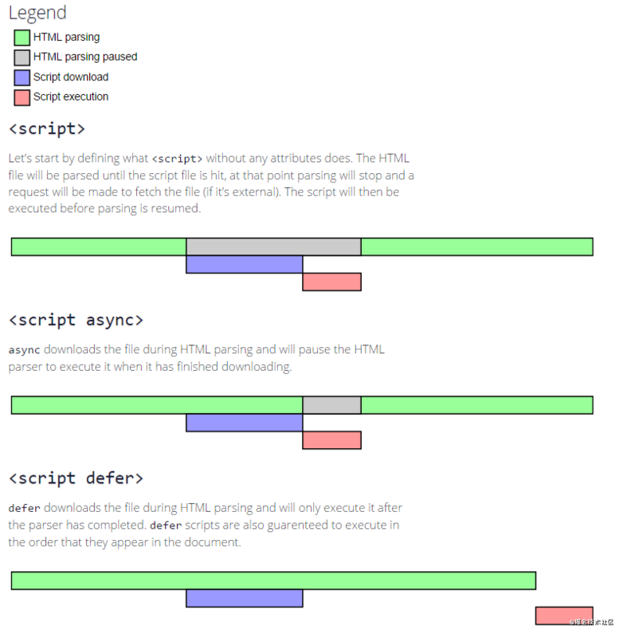
-
script：立即下载执行，下载执行的过程中阻塞 HTML 解析（DOM 构建） -
async script：立即下载执行，但是下载过程不影响 HTML 解析（DOM 构建），仅在执行过程阻塞 HTML 解析（DOM 构建） -
defer script：立即下载，延迟执行（HTML 解析完成后），不阻塞 HTML 的解析（DOM 构建）
总结
-
CSS不会阻塞DOM的解析，但会阻塞DOM渲染。 -
JS阻塞DOM解析，但浏览器会”偷看”DOM，预先下载相关资源。 - 浏览器遇到
<script>且没有defer或async属性的 标签时，会触发页面渲染，因而如果前面CSS资源尚未加载完毕时，浏览器会等待它加载完毕在执行脚本。
因此，<script>最好放底部，<link>最好放头部，如果头部同时有<script>与<link>的情况下，最好将<script>放在<link>上面